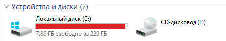
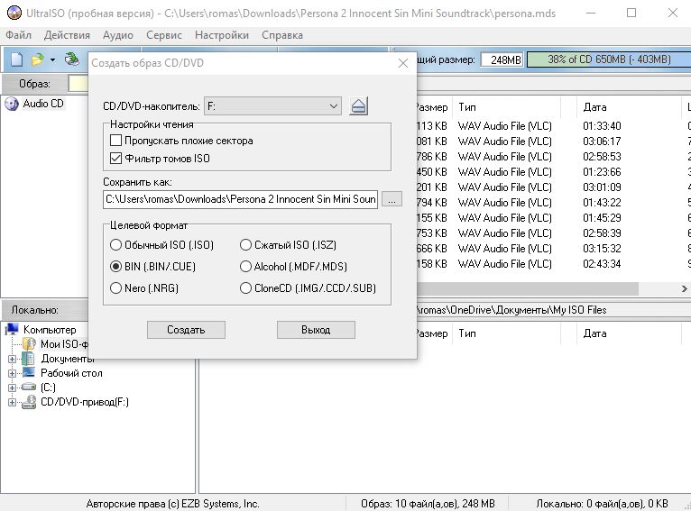

Итак, данный туториал сделан специально для тех, кто не умеет пользоваться такой замечательной программой как UltraISO
Собственно, вот краткий список того, что вам вообще надо:
Итак, для начала давайте всё подготовим
Первым делом, как бы это банально ни звучало, вам необходимо подключить ваш привод к ПК
Вот что-то такое у вас должно примерно находится в проводнике:
Если по какой-то неведомой причине вашего привода здесь нет, то я вам глубоко соболезную и настоятельно рекомендую посмотреть, есть ли у вас привод вообще, подключен ли он к вашему пк, а также есть ли у вас на него драйвера.
Итак, далее вам необходимо скачать непосредственно саму UltraISO. Сама программа условно бесплатная (как WinRAR). Ну и собственно загрузить вы можете её вот тут по ссылке: https://www.ezbsystems.com/ultraiso/
Также это можно сделать здесь: https://www.ultraiso.com/
Думаю, как её установить объяснять не нужно.
Дальше вам необходимо вставить ваш диск в привод для дисков и открыть UltraISO, далее вы можете просто нажать F8
Так как этот гайд изначально делался как "Гайд как рипать CD-диски", то и настройки я на скрине выставил соответствующие
В общем вот так выглядит стандартная настройка программы? Не забудьте в поле "Сохранить как" указать нужное местоположение файла. Но почему для CD дисков используется BIN+CUE? Ну, отчасти потому что это самый распространённый формат, а также из-за того что музыку в таком формате слушать намного легче и удобнее. Раз уж гайд для всех дисков, то расскажу немного и про остальное.
Также вы на просторах сети можете найти и прочие форматы образов, такие как CSO (Специальный формат PSP сжатого ISO), голые img, vhd (образ жёсткого диска) и другие. UltraISO с ними, ПРОШУ ЗАМЕТИТЬ, не работает. Так что пытаться не стоит.
Да, гайд кончился, это конец, вы сделали рип диска.
Спасибо за прочтение, всем хорошего настроения, ня ^_^